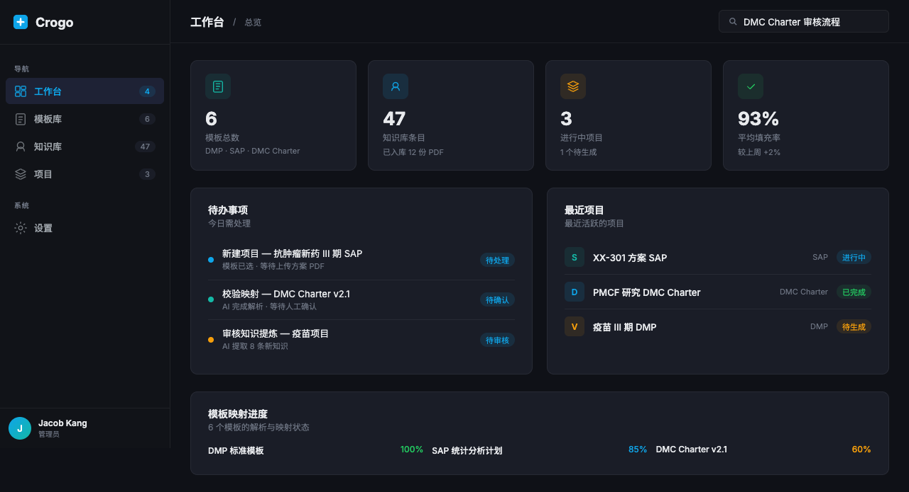
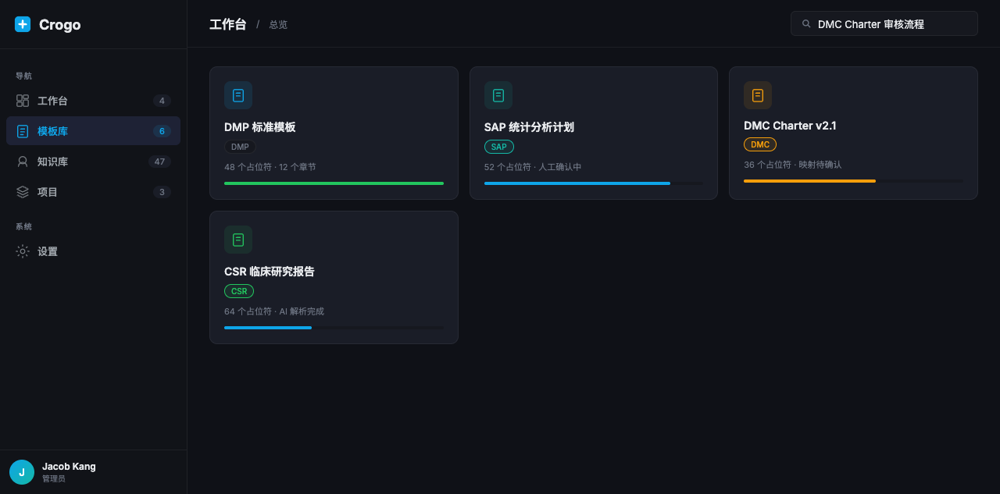
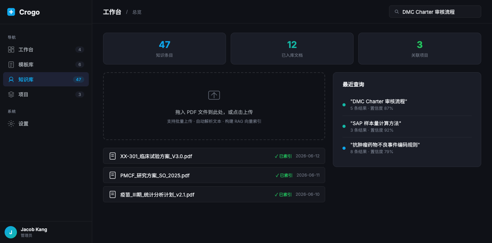
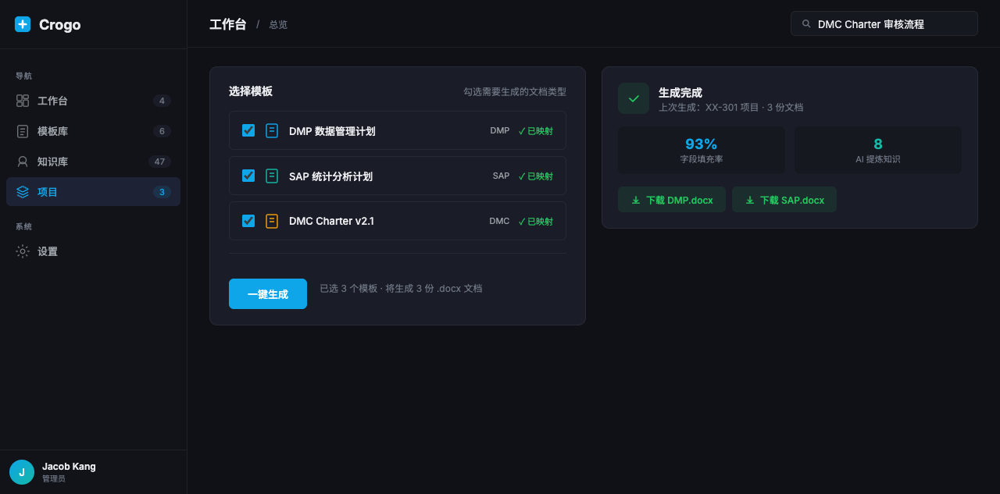

Crogo 理解 DMP、SAP、DMC Charter 等医药文档结构， 将方案 PDF 智能解析为结构化知识，一键生成符合规范的临床研究文档。

上传方案文件 → AI 自动解析 → 一键生成目标文档，全程无需手动映射字段
四大模块覆盖临床文档全生命周期



点击截图查看全尺寸预览
区别于通用文档工具，Crogo 深度理解医药行业规范与文档结构
上传一份方案 PDF，看看 AI 能帮你生成什么。免费使用，无需注册。